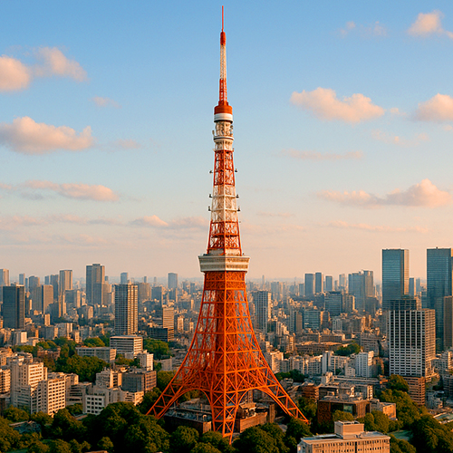

Tokyo Tower – Iconic Red and White Landmark of Tokyo
Tokyo Tower (東京タワー), completed in 1958, is one of Japan’s most famous landmarks and a symbol of Tokyo’s post-war rebirth and modernization. Standing at 333 meters (1,093 feet), it was the tallest structure in Japan until the completion of Tokyo Skytree in 2012. Its distinctive red and white lattice structure is instantly recognizable and draws millions of visitors annually.
Historical Significance and Design
Inspired by the Eiffel Tower in Paris, Tokyo Tower was built as a communications and broadcasting tower to support Japan’s rapidly growing TV and radio industries. Beyond its practical use, it became a cultural icon featured in countless films, anime, and artworks, symbolizing Tokyo’s resilience and technological progress during the Showa era.
Observation Decks and Visitor Experience
Tokyo Tower offers two main observation decks: the Main Deck at 150 meters and the Top Deck at 250 meters. From these vantage points, visitors can enjoy sweeping views of Tokyo’s sprawling cityscape, including famous sites such as Roppongi Hills, Shibuya, and even Mount Fuji on clear days. The tower also features special lighting events and seasonal illuminations, adding to its charm.
Attractions and Facilities
The tower houses several attractions including a wax museum, aquarium, souvenir shops, and restaurants offering panoramic views alongside delicious Japanese and international cuisine. Tokyo Tower’s FootTown complex at the base is a bustling hub of entertainment, ideal for families and solo travelers alike.
Getting There and Visitor Tips
Located in Minato Ward, Tokyo Tower is easily accessible from multiple train stations such as Akabanebashi Station (Toei Oedo Line) and Kamiyacho Station (Tokyo Metro Hibiya Line). Visiting during sunset or nighttime is highly recommended for stunning illuminated views. Tickets can be purchased online or at the entrance, with combination passes available for extra experiences.
Why Visit Tokyo Tower?
Whether interested in Japan’s modern history, architecture, or breathtaking city panoramas, Tokyo Tower remains a must-see destination. Its blend of historical charm and urban vibrancy makes it a timeless symbol of Tokyo’s spirit and innovation.
Visitor Information
- 🌸 Location: 4 Chome-2-8 Shibakoen, Minato City, Tokyo 105-0011, Japan
- 🌸 Hours: 9:00 AM – 11:00 PM (last admission 10:30 PM)
- 🌸 Admission: Adults ¥1,200 (Main Deck), ¥3,000 (Top Deck + Main Deck)
- 🌸 Access: Akabanebashi Station (Toei Oedo Line), Kamiyacho Station (Tokyo Metro Hibiya Line)
Tags: Tokyo Tower, Tokyo landmark, observation tower Tokyo, Minato attractions, panoramic views Tokyo, Japan travel, Tokyo sightseeing
Planning to visit Tokyo Tower?
To get the most immersive and insightful experience, we recommend booking a certified local private guide from our team. All our guides are licensed professionals officially recognized by the Japanese government, offering personalized tours tailored to your interests. Please contact your selected guide in advance to confirm availability and get expert assistance for your trip.